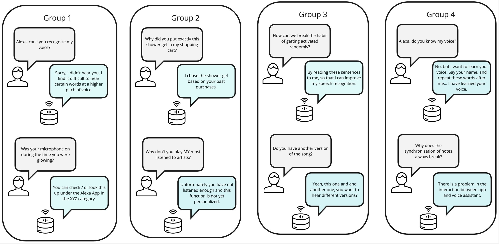

AI companions · Accountability tool
CheckMyVA: getting to know the assistant that knows you
A browser tool that lets households request, explore and manage the data their Alexa or Google Assistant collects, designed and tested with households in a three-year living lab.
My contribution
UX researcher: owned the research from discovery to evaluation and fed findings into each prototype iteration
- Timeline
- 2020 – 2023
- Team
- University of Siegen, Fraunhofer FIT, open.INC GmbH
- Methods
- User needs interviews, co-design workshops, iterative prototyping, usability testing, heuristic evaluation, experience sampling, interaction-log analysis
Voice assistants record what people say to them, but people had no usable way to see that data or understand why the device acted in unexpected ways.
People could scroll through their history in the Amazon and Google apps or request their data, but takeouts arrived as raw JSON and CSV files few could read, and Alexa's explanations were one-off replies.
- Ran role-play workshops where people acted out breakdowns and wrote the explanations they wanted
- Tested prototypes of a data visualisation with 11 households, then iterated
- Evaluated Alexa's “why did you do that?” feature with 19 households over 19 months

Here are the last 10 of your recorded commands. Only data since your last import or sync is included. Click “Visualise all my data” to see every command.
👆 Click a guideline
Explain what each file in the data takeout contains and offer the next step, such as importing it.
Suggested categories
Shared by other households
Suggest ready-made categories, and let people share categories with each other.
“turn on the light”
- When
- Tue 22:14
- Device
- Kitchen speaker
- Voice
- Recognised: Sam
- Answer
- “OK”
Show who spoke, on which device and in which room, so people can piece the situation back together.
Highlight recordings that happened by accident, so people can review or delete them quickly.
What your data may suggest about you
- Usually wakes up around 7:00
- Listens to the radio most evenings
- Has smart lights in three rooms
Inferred from your commands
Show what the data could reveal to companies, such as habits and preferences.
Each arrow is a place your data may go
Make visible when a command passes data on to skills, apps or third-party devices.
👆 Tick a question and watch the answer improve
Situation: the kitchen light turned on while you were in the living room.
Alexa, why did you do that?
I heard: “turn on the light”.Today's one-off answer
Sorry, that must have been confusing.Q1 · acknowledge and apologise
The kitchen speaker picked up “turn on the light” at 22:14, so I chose the kitchen lamp.Q2 · new information
Nothing else was changed, and you can find this in your history.Q3 · reassuring wording
Would you like to know how I choose which room?Q4 · open to follow-up
Yes, tell me.
I can't tell rooms apart by voice yet. I use whichever speaker hears you best.Q5 · honest about its limits
Illustrations and example dialogues are mine, based on the guidelines in the papers.
Looking back
Three years with the same households changed how I think about accountable voice assistants. Transparency features can feel empowering at first and confusing later: Alexa's “why” feature repeated what people already knew, so they stopped asking. Accountability has to grow with the relationship, explaining more at the start and less as people and devices get to know each other.